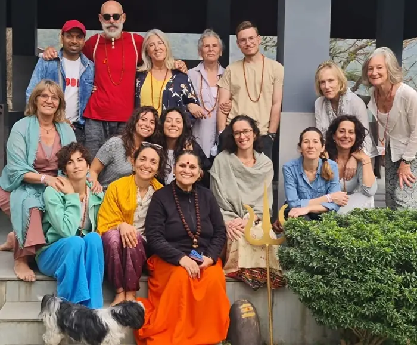
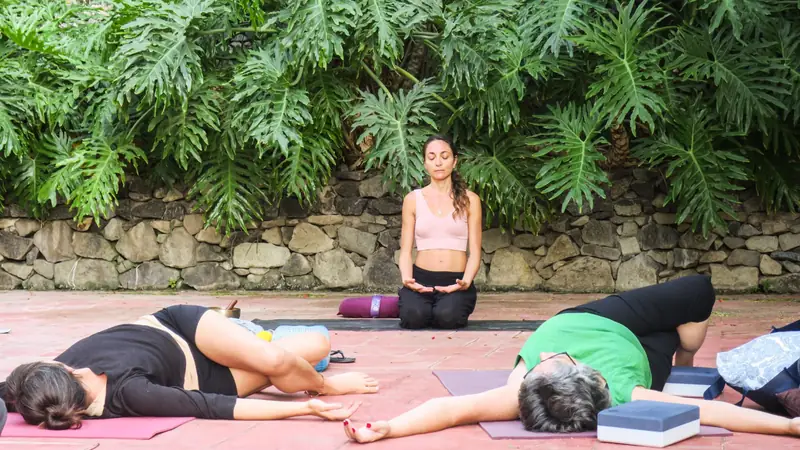
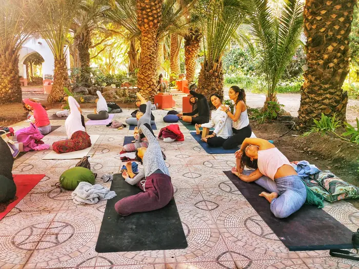
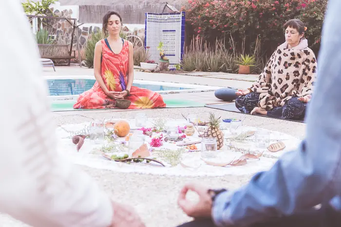

Retiros y eventos
Viajes e inmersiones para mirar hacia dentro, en India, Catalunya y Canarias.
Próximas experiencias
India del Norte · L'ultimo viaggio dell'ego
Retiro en Rishikesh con Melania Di Vara y Miquel Canut. Detalles y preinscripción en El Último Viaje del Ego.
Ver en El Último Viaje del Ego
Catalunya · L'ultimo viaggio dell'ego
Retiro en Catalunya. Escríbenos para más información.
Pedir información
Gran Canaria
[Pendiente: fechas y detalles del retiro en Gran Canaria]
Ver dóndeFechas tomadas de la sección Immersioni de melaniadivara.com. El detalle completo de India vive en la web conjunta.
Procesos con plantas medicinales
Procesos terapéuticos personalizados, con preparación previa e integración posterior, en un espacio seguro y cuidado.
Estos procesos no sustituyen ningún tratamiento médico o psicológico. La participación requiere una entrevista previa.

Volver a casa. El viaje del ego
Curso online de tres meses en directo por Zoom, con Erik Maiquez, Miquel Canut y Melania Di Vara.